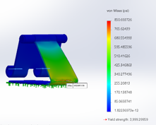
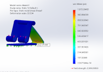
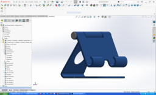

SOLIDWORKS Simulations FEA
Beginning
The CAD model on the left is interactive and can be rotated!
Goal:The goal was to test a product under real life loads in order to determine if the design was currently sufficient and what improvements we could make to reduce costs and improve performance.
Limitations: The design must remain practical for users, maintain stability under load, and use an aluminum alloy that is both priced economically and performs efficiently.
Purpose: The overall goal of this project was to produce a functional, lightweight, and structurally sound iPad stand, using CAD then through SOLIDWORKS simulations analysis to optimize the material and geometry for structural stability and cost effectiveness.
Middle
Decisions: Key design decisions focused on the overall geometry of the stand, and identifying stress points that could compromise the structure.
Process: The process involved creating a SOLIDWORKS model of the stand, running a statics study to calculate safety factors, and iteratively refining the design. The initial study used 1060 H12 aluminum, producing a calculated safety factor of 7.6 for the heaviest iPad tablet currently on the market. A switch to a weaker 1060 aluminum alloy gave a more reasonable safety factor of 2.8, which was sufficient and helped to reduce overall product cost. However, this did not account for future heavier tablets that may be released onto the market. Analysis showed that most stress was applied to the back of the stand due to a large hole weakening the structure. Further adjustments to reduce base and neck thickness to 0.14 in brought the safety factor to 3.7 while still supporting the heaviest tablet. Eventually, design refinements included removing the hole and changing chamfers to fillets, which improved the safety factor to 4.7. This allowed us to also reduce overall manufacturing complexity alongside the cost savings from the change to the 1060 aluminum alloy.
Materials: Aluminum 1060 H12 and 1060 alloys were used, with the final design optimized for material reduction without compromising structural integrity. CAD models and SOLIDWORKS simulations guided the iterative adjustments to model geometry and material choices.
End
How did this solve the problem?
The stand was optimized to safely support the heaviest iPad while using minimal material, removing structural weaknesses, and allowing for better force distribution.
How did this achieve this purpose?
By iteratively refining the design based on stress analysis, the stand achieved an efficient balance between safety and material use. It maintained shape under load, improved overall durability, and allowed for a thinner, more cost-effective design.
My project demonstrates my ability to optimize a product through CAD analysis and structural reasoning, showing that I can design solutions grounded in engineering principles while improving efficiency and functionality.